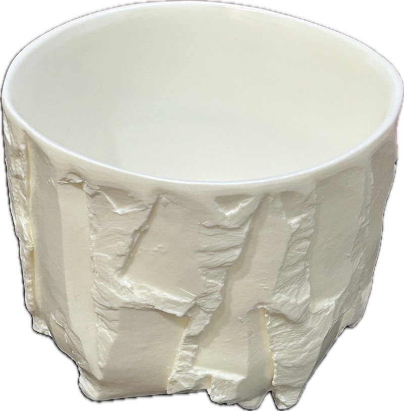

Fujita Syo

Exprimer la beauté naturelle de l'argile de Bizen telle qu'elle est ne s'accomplit pas du jour au lendemain. Nous ne faisons jamais de compromis dans la sélection de notre argile, prenant le temps et le soin nécessaires pour l'affiner, et nous poursuivons les formes et les expressions qui conviennent le mieux à chaque matière. Même lorsque les résultats bouleversent les conceptions traditionnelles de la céramique de Bizen, nous continuons à en affronter la véritable essence. Au-delà du concept traditionnel de « la beauté de l'utile », nous aspirons à créer une Bizen-yaki créative qui transcende les cadres et les frontières établis.
PROFIL
Biographie
Première exposition personnelle à la boutique principale Tokeido dans le quartier historique de Kurashiki Bikan
Voyage de deux mois à travers les États-Unis (de San Francisco à New York), approfondissant les échanges avec des céramistes et cuisant des fours anagama et noborigama en Iowa
Exposition « Bizen in Iowa » au The Ceramics Center (Iowa)
Exposition collective chez Sara Japanese Pottery (New York)
Exposition collective à la succursale new-yorkaise de l'Urasenke
Exposition « Chawan » à l'Ippodo Gallery (New York)
Exposition à la Gallery Jodo Mako (Taipei) ; exposition permanente par la suite
Exposition personnelle à Mugen-an Ginza ; exposition permanente par la suite
Exposition collective à Yixian Zhan (Taipei) (également en 2019)
Création d'un jubako laqué en trois niveaux sur mesure pour Pur' – Jean-François Rouquette (une étoile Michelin) au Park Hyatt Vendôme, Paris
Ouverture de la galerie BIZEN Kai à Inbe, ville de Bizen
Participation à des foires d'art à Tokyo, Kanazawa, Nagoya, Taipei et aux Philippines
Nombreuses expositions personnelles et collectives dans des grands magasins et galeries au Japon
Participation à des foires d'art à Tokyo, Kanazawa, Nagoya, Taipei et aux Philippines
Nombreuses expositions personnelles et collectives dans des grands magasins et galeries au Japon
Affiliations
Association des céramistes de Bizen (Bizen-yaki Toyukai)
Distinctions
- Sélectionné pour l'Exposition d'art de la préfecture d'Okayama
- Sélectionné pour l'Exposition de la section Chugoku de l'Exposition nationale des arts traditionnels du Japon
- A également participé à des expositions à trois artistes au Yonago Takashimaya et au Fukuya Hatchobori Main Store, ainsi qu'à de nombreuses expositions personnelles en galerie.
Ma définition de la Bizen-yaki
Je définis la Bizen-yaki comme une céramique cuite à haute température, entre 1 200 et 1 300 °C, à partir d'argiles et de minéraux de haute qualité provenant de la région de Bizen, dans la préfecture d'Okayama.
À propos du Shiro-Bizen (Bizen blanc)
À propos du Shiro-Bizen (Bizen blanc)
Le « Bizen blanc » était populaire à l'époque Edo. Il était fabriqué à partir d'argile blanche contenant divers composants extraits au Japon. Syo Fujita utilise de la pierre céramique d'un blanc pur, extraite à 156 mètres de profondeur dans une mine du district de Mitsuishi, à Bizen, pour créer des pièces cuites sans émail. Ce nouveau Bizen blanc présente une grande transmittance lumineuse. Sa beauté naît de cette transparence cristalline.
